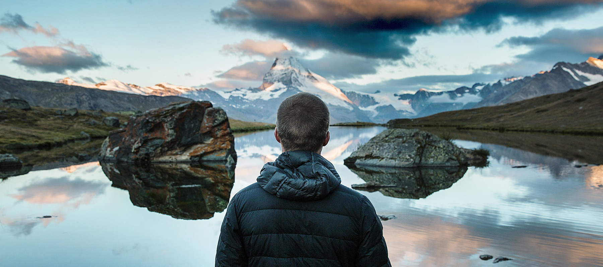

BRINGING SOME NATURE INTO YOUR WORK SPACE
Posted on January 13, 2016 by David Morgan

Natural Lite is a beautiful free theme for WordPress created by Organic Themes. It’s a perfect theme for business websites with a focus on the environment. Whether you’re providing fishing charters or surf adventures, promoting local farmers markets or saving the whales, offering vegetarian…
Category: Blog, Category, Featured
Tags: apparel, hiking
OUTDOOR WEAR FOR THE WINTER HIKER
Posted on January 13, 2016 by David Morgan
Natural Lite is a beautiful free theme for WordPress created by Organic Themes. It’s a perfect theme for business websites with a focus on the environment. Whether you’re providing fishing charters or surf adventures, promoting local farmers markets or saving the whales, offering vegetarian…
Category: Blog, Category, Featured
12 STRETCHES TO START YOUR DAY
Posted on January 13, 2016 by David Morgan
Natural Lite is a beautiful free theme for WordPress created by Organic Themes. It’s a perfect theme for business websites with a focus on the environment. Whether you’re providing fishing charters or surf adventures, promoting local farmers markets or saving the whales, offering vegetarian…
Category: Blog, Category, Featured
CAMPFIRE TALES FOR THE FAMILY
Posted on January 13, 2016 by David Morgan
Natural Lite is a beautiful free theme for WordPress created by Organic Themes. It’s a perfect theme for business websites with a focus on the environment. Whether you’re providing fishing charters or surf adventures, promoting local farmers markets or saving the whales, offering vegetarian…
Category: Category, Featured
Tags: camping, nature, stories, tales
Recent Posts
- Outdoor Wear For The Winter Hiker
- Bringing Some Nature Into Your Work Space
- 12 Stretches To Start Your Day
Categories
- Blog
- Category
- Featured
- Slideshow
Text Widget
This is an example text widget. Add content or HTML to a text widget. Nec dubitamus multa iter quae et nos invenerat. Quis aute iure reprehenderit in voluptate velit esse. Vivamus sagittis lacus vel augue laoreet rutrum faucibus.